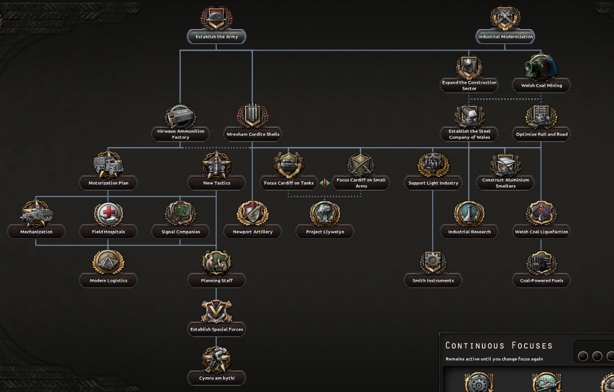
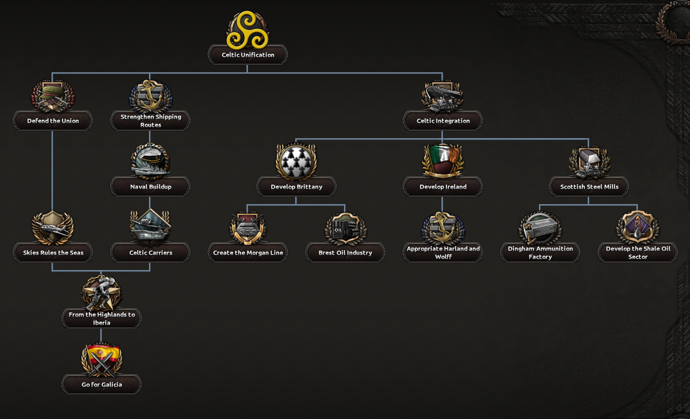
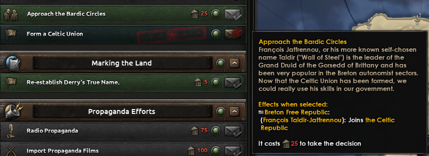
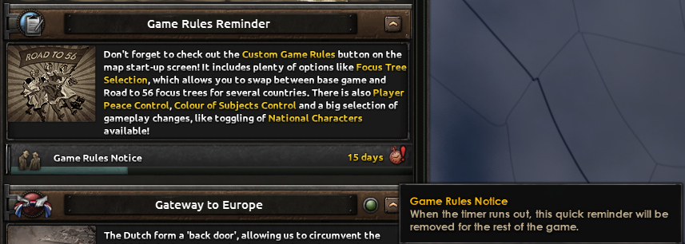

The Road to 56
Mod for Hearts of Iron IV
▶ My Contributions
Notice: This project is updated monthly and I come back to the project now and then. Expect the page to evolve over time!
1. Creating new focus trees and branches for several countries.
2. Creating limited seasonal content for players to enjoy.
3. Updating and maintaining old content as new updates and mechanics get introduced.
4. Fixing bugs and crashes as they are discovered and reported to the team.
▶ Contribution Breakdown
1. Creating new content such as focus trees and branches for several countries.
In the beginning when I joined the mod team, I focused more on fixing bugs and inconsistences across the entire mod and also updating content of current countries to their latest versions as during this period the mod was still leasing other mods for content (with permission, of course). This is no longer the case. Some of those countries would be Switzerland, Iceland and Brazil. During the later years the team grew considerably and by 2019, we decided that all content moving forward would be in-house. Since then, I have mainly made a few focus tree branches for Wales and the Celtic Countries as seen in Figures 1, 2 and 3. For context, focus trees are the main way to progress in the game. Some other content inclues the Game Rules Reminder and tons of focus tree paths the AI can take.
   2. Creating limited seasonal content for players to enjoy.
I have been responsible for most seasonal/limited time events for the mod. Examples include when the mod hit 500K subscribers on Steam, I implemented a little cake modifier to boost countries as a thanks and also added boxes for players to open, free of charge with some nice bonuses and stupid jokes. This is a mod. For April Fools 2024, I was asked to bring it back and with that, I expanded the boxes feature and returned it as a limited time run.
3. Updating and maintaining old content as new updates and mechanics get introduced.
The Road to 56 has been around since 2016 and has continued to survive every major update and DLC thrown at it, a lot of this because of tremendous work from the team and I have been a part of a few of these releases, such as No Step Back and Man the Guns. I helped fix tons of issues, crashes and make current content work.
4. Fixing bugs and crashes as they are discovered and reported to the team.
One thing I do is constantly scan the Road to 56 Discord server and subreddit for any bug reports that have enough information that I can get to work on it, or forward anyone else. These range from small all the way to massive crashes that took hours of head scratching to solve. I consider this part to be oddly satisfying and fun.